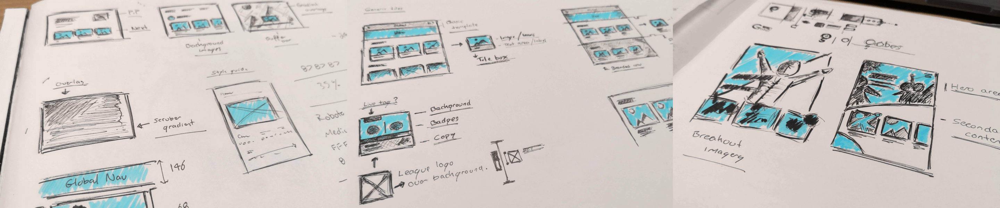
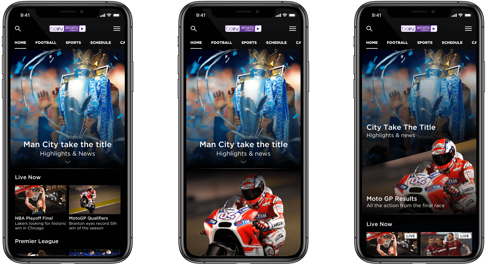

Sports Streaming Service
This 6 month contract involved working on the interface design and overall look and feel for a global sports streaming service. This included native mobile apps for both Android and iOS, responsive web and large screen experiences.
Visual exploration
The first phase of the project involved general exploration for the look and feel of the combined service. The end client wanted a contemporary update to their visual style, conveying an elegant and premium product. As a team we collated examples from a range of competitors and general sports related mediums from which inspiration could be gathered. This allowed us to quickly discard styles which we felt did not contribute towards the direction we were taking.
Ideation
The defining challenge when it came to ideation and concept design was to create a UI that felt fresh and bespoke, while utilising a relatively well defined design system. We began with some rough exploration of ideas which coudl then be refined towards a closer relationship with the design system in question.
Wining over the client
Taking a collection of these design concepts to the client, the challenge was to then convey the experience end users would have with the finished product, from only a sample of sections of the interface.
Refining and preparing re-useable assets
With design work becoming more refined, we were then able to begin the production of assets that coudl be re-used across the UI, allowing responsive web and mobile versions to both be easily designed and production ready. Common assets such as content tiles were placed into style-sheets which various designers could then use to populate any future variants that the client wished to see mocked up.